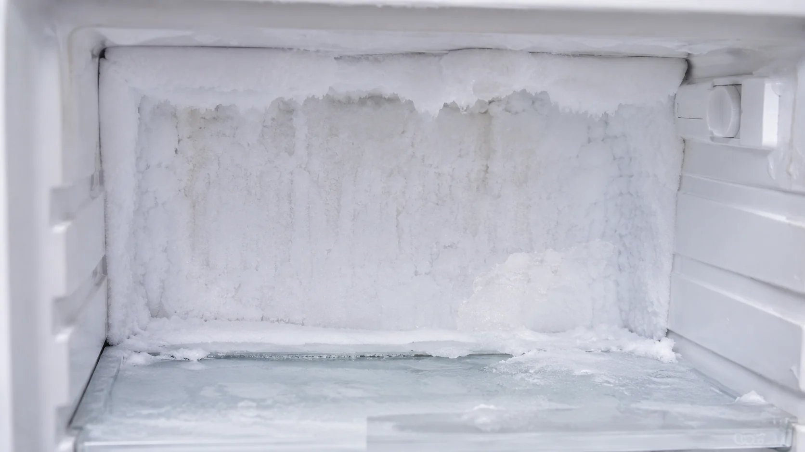
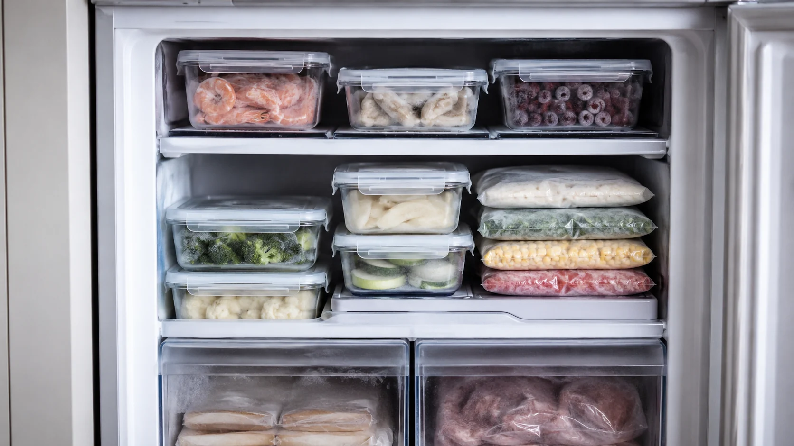
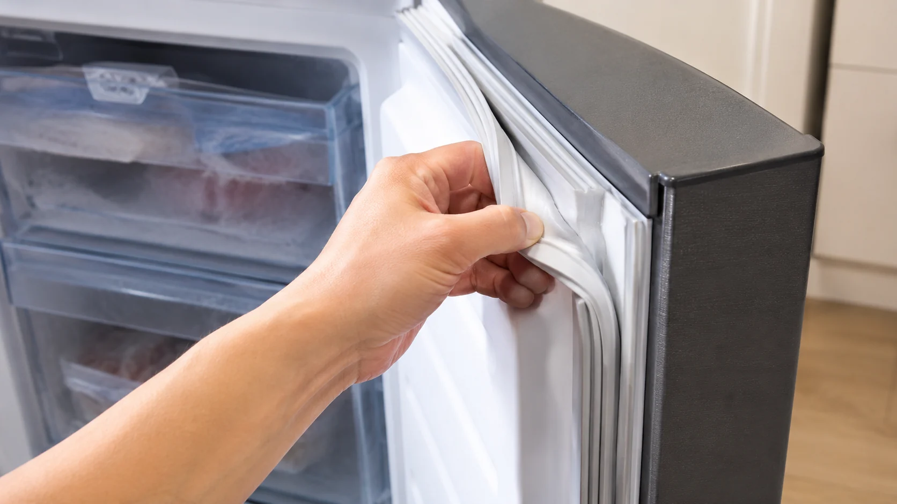
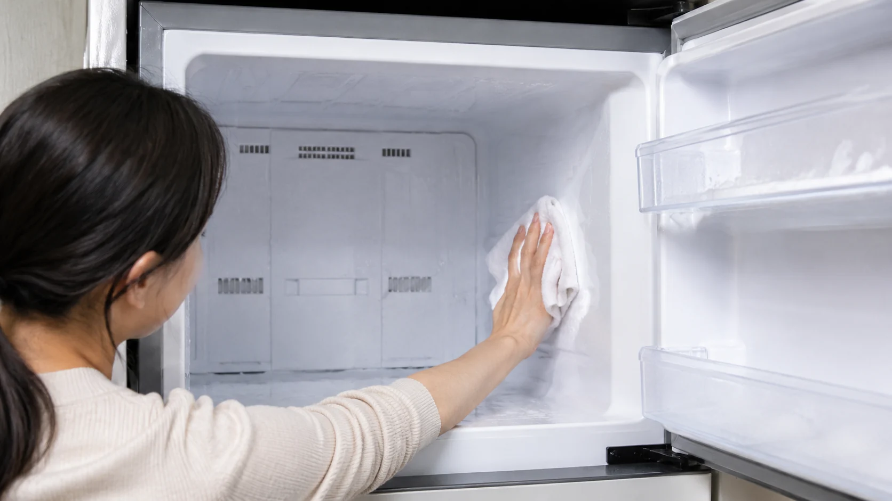
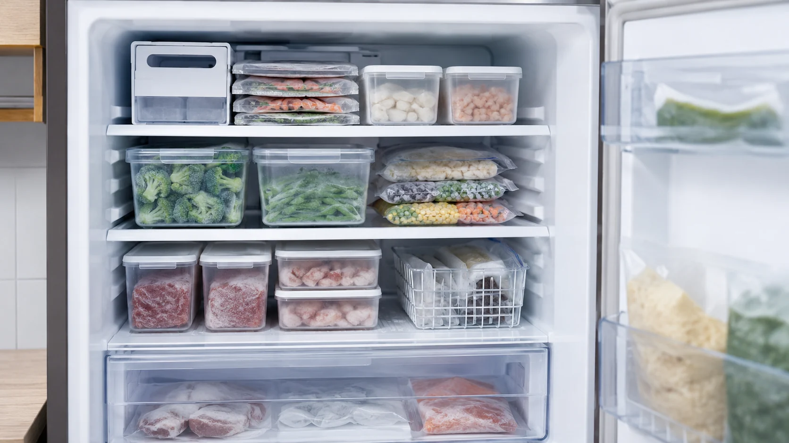

냉동실 성에가 자꾸 끼는 집, 고장보다 먼저 봐야 할 습관이 있습니다
냉동실 성에가 생기는 생활 속 원인과 문 여닫기, 음식 보관, 청소 타이밍을 현실적인 사례로 풀어낸 생활정보 글입니다.

냉동실이 하얗게 변하면 대부분 고장부터 의심하지만 꼭 그렇진 않습니다
한 온라인 글에서 냉동실 벽이 눈 온 것처럼 하얗게 변했다는 사진을 본 적이 있습니다. 댓글은 바로 갈렸습니다. 냉장고 수명이 끝났다는 말도 있었고, 문을 자주 열어서 그렇다는 말도 있었습니다.
저도 처음엔 냉동실 성에가 생기면 기계 문제라고만 생각했습니다. 그런데 막상 살펴보니 제 습관이 꽤 큰 원인이더라구요.

장을 보고 온 날 뜨거운 반찬을 대충 식혀 넣거나, 비닐 포장을 느슨하게 묶어두거나, 문을 열고 한참 고민하는 행동이 반복되면 냉동고 안에 습기가 들어갑니다.
그 습기가 차가운 벽면에 붙으면서 하얀 얼음처럼 변하는데, 이걸 계속 방치하면 공간도 줄고 냉동 효율도 떨어져 보입니다.
제가 놀랐던 건 성에 자체보다 그걸 만드는 과정이 너무 일상적이었다는 점입니다. 딱히 잘못하고 있다는 느낌 없이 매일 하던 행동들이었거든요.

문을 오래 열지 않았다고 해도 음식 포장이 느슨하면 성에는 다시 생깁니다
냉동실 성에 제거를 해도 금방 다시 생긴다면 음식 보관 상태를 봐야 합니다. 특히 국물, 데친 채소, 고기, 생선처럼 수분이 많은 식재료를 대충 묶어 넣으면 내부 습도가 쉽게 올라갑니다.
저는 예전에 남은 밥을 비닐에 넣고 대충 묶어 냉동했는데, 며칠 지나면 주변에 작은 얼음 결정이 붙어 있었습니다. 그때는 그냥 냉동실이 세서 그런 줄 알았습니다.
하지만 밀폐용기나 지퍼백으로 공기를 최대한 빼고 넣으니 성에가 눈에 띄게 덜 생겼습니다. 이건 냉동실 청소 방법보다 먼저 손봐야 할 습관이라고 느꼈습니다.

냉장고 관리에서 은근히 무시되는 게 고무패킹입니다. 패킹에 음식물 찌꺼기나 먼지가 끼면 문이 완전히 밀착되지 않고, 아주 작은 틈으로도 습한 공기가 들어갈 수 있습니다.
여기서 의견이 나뉠 수 있습니다. 어떤 분은 성에가 조금 있어도 그냥 쓰면 된다고 하고, 어떤 분은 바로 청소해야 한다고 합니다. 저는 양이 적을 때 바로 정리하는 쪽이 나중에 훨씬 덜 피곤했습니다.

드라이어로 녹이면 빠르다는 말, 편하지만 조금 조심해야 합니다
냉동고 얼음 생김을 빨리 해결하려고 드라이어를 쓰는 경우가 있습니다. 실제로 빠르게 녹는 느낌은 있지만, 뜨거운 바람을 가까이 대면 플라스틱 부품이나 고무패킹에 부담이 갈 수 있습니다.
저는 성에가 심하지 않을 때는 전원을 잠시 조절하거나 내용물을 비운 뒤 자연스럽게 녹이고, 물기를 충분히 닦아 말리는 방식을 선호합니다. 시간이 조금 걸려도 마음이 편했습니다.
청소할 때 칼이나 송곳으로 얼음을 떼어내는 건 피하는 게 좋습니다. 순간적으로 속은 시원해도 내부 벽면에 상처가 생기면 더 큰 문제가 될 수 있습니다.
냉동식품 보관은 예쁘게 정리하는 것보다 공기와 수분을 줄이는 방향으로 봐야 합니다. 보기 좋은 정리보다 성에 덜 끼는 정리가 실전에서는 더 오래 갑니다.
결국 냉동실 성에는 기계 탓으로만 돌리기 어렵습니다. 문 여는 시간, 포장 방식, 뜨거운 음식 넣는 습관, 패킹 상태가 같이 만든 결과일 수 있습니다.
냉동실을 열 때마다 하얀 성에가 보이면 괜히 찝찝합니다. 그런데 고장이라고 단정하기 전에 우리 집 냉동 습관을 먼저 보면 의외로 답이 보일 때가 많습니다. 여러분은 성에가 조금 생기면 바로 치우는 편인가요, 아니면 어느 정도 쌓일 때까지 두는 편인가요.